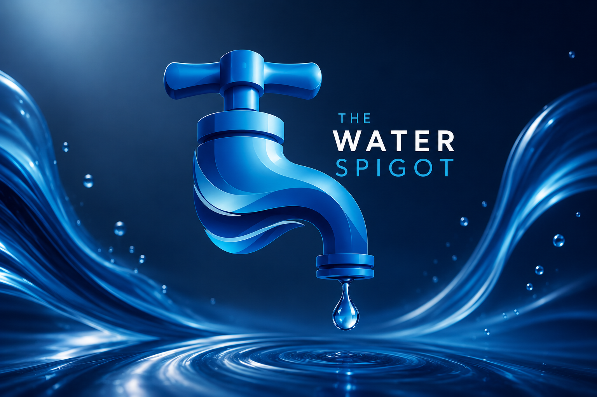

What’s in My Water?
A practical testing package for homeowners who want a clearer picture of their drinking water quality.
Call for package detailsNELAC Certified Environmental Laboratory
Trusted laboratory analysis and field sampling for homeowners, businesses, community systems, and regulatory projects across Northwest Florida.

Before You Collect a Sample
Microbiology samples are not accepted after 12:00 p.m. on Fridays. These samples must be collected in a specific sterile container, available for pickup at The Water Spigot or your local health department.
Popular Testing Packages
Not sure which individual analyses you need? Start with one of our commonly requested testing packages.
A practical testing package for homeowners who want a clearer picture of their drinking water quality.
Call for package detailsWater testing for property transactions involving FHA loan requirements. Confirm the required analyses and container before sampling.
Call for FHA testing detailsLaboratory & Field Services
Analytical testing for private samples, property transactions, and community systems.
Laboratory analysis supporting operational, environmental, and regulatory needs.
Testing across solid matrices for general chemistry, nutrients, and trace metals.
Trained technicians specializing in groundwater and bacteriological sampling.
Tests & Analytes
Use the search below to find an analyte and review available laboratory analyses.
No matching analytes found. Our friendly and knowledgeable staff can help get your sample to the correct accredited laboratory for prompt results.
About the Laboratory
The Water Spigot, Inc. is a NELAC-certified environmental laboratory serving the Panama City area for more than 30 years.
Planning Your Testing
Let us know about your schedule and sample volume when planning your testing.
Standard results are typically available within 7–10 business days.
Rush service may be available for an additional fee. We’ll work with you to meet your deadline when scheduling and laboratory capacity allow.
Volume discounts may be available for multiple samples or a single sample requiring a large number of analytes.
Talk With the Laboratory
Our staff can help confirm the right analyses, container, preservation, and delivery timing for your project.
Business hours
Monday–Thursday: 8:00 a.m.–5:00 p.m. CST
Friday: 7:00 a.m.–4:00 p.m. CST